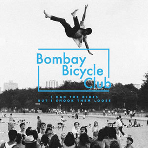

Bombay Bicycle Club are an English indie rock band from Crouch End, London, consisting of Jack Steadman, Jamie MacColl, Suren de Saram, and Ed Nash. They are guitar-fronted and have experimented with different genres, including folk, electronica, world music and indie rock. The band were given the opening slot on 2006's V Festival after winning a competition. They subsequently released two EPs and their debut single "Evening/Morning". Since then, the band has released five albums including So Long, See You Tomorrow which topped the album charts in February 2014. The band has toured worldwide as a headlining act, playing North America, Australia, Europe and Asia. In January 2016, the four members announced that they would pursue solo projects. Ed Nash recorded music under the name Toothless, and released his debut album in early 2017.Frontman Jack Steadman, under the name Mr Jukes, released his debut album in 2017. In January 2019, Bombay Bicycle Club announced their return to making new music and performing live after a three-year hiatus: "Since late last year we've been getting back into the swing of playing music together. More than anything it just felt great to be in the same room playing again. It made us realise what a good thing we have and has given us renewed energy and enthusiasm for the future". Album cover for I had the blues but I shook them loose
Steadman, MacColl and de Sarammet at age 15 as students at University College School, Hampstead,and began playing under the name The Canals after performing together in a school assembly, with an additional keyboardist. They switched between various aliases until they picked Bombay Bicycle Club, named after a (now defunct) chain of Indian restaurants in North London. The line-up changed regularly until summer 2006, when Ed Nash (a student at Camden School for Girls),[14] joined the band after they met him at a funeral. Initially they played gigs at small London venues such as The Old Blue Last, Lark in the Park and Jacksons Lane (as well as winning Exeter's Got Talent 2009). They released demos of their music on Myspace, with early versions of 'The Hill' and 'Autumn' as well as the song, 'City Lights'.
| Album | Year Released |
|---|---|
| I had the blues but I shook them loose | 2009 |
| Flaws | 2010 |
| A different kind of fix | 2011 |
| So long, See you tomorrow | 2014 |
| Everything else has gone wrong | 2020 |
Watch one of their music videos here!
Watch one of their live performances here!